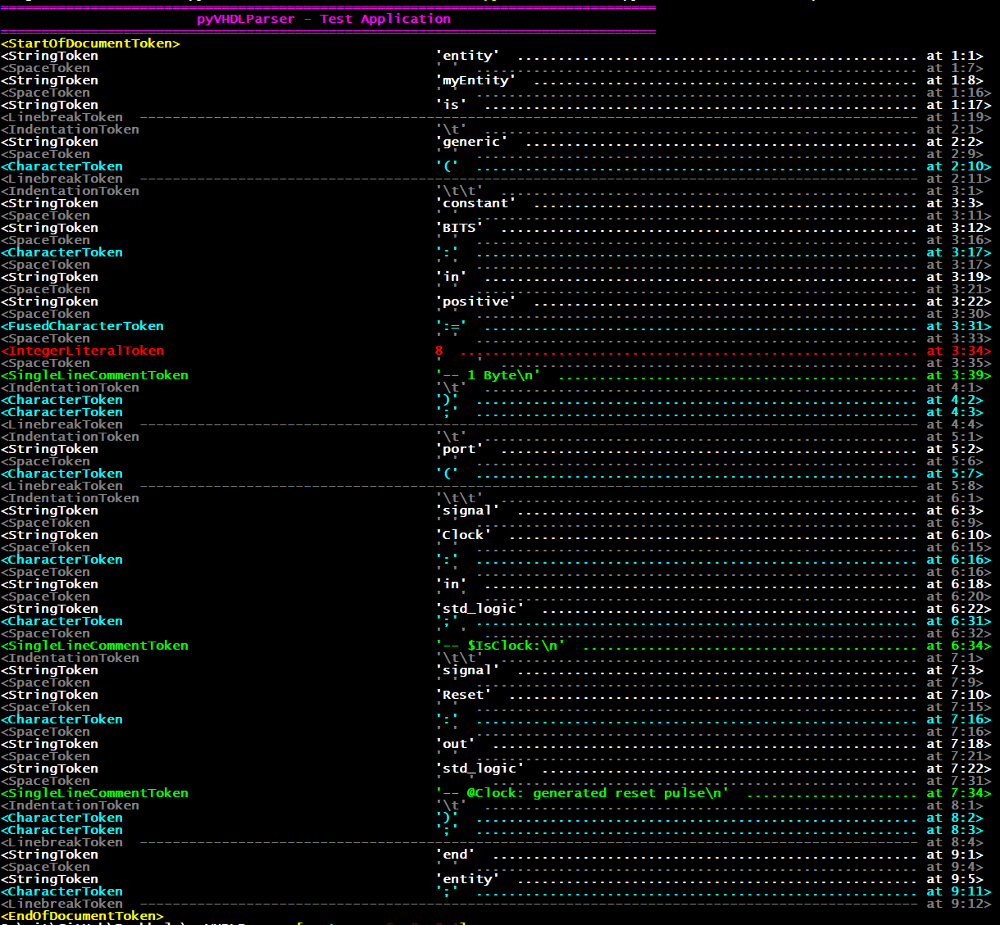

1. Pass - Tokens¶
In the first pass a source file is sliced into a chain
of double-linked objects of base-class Token. While
token creation, the start and end position of a token is preserved as a
SourceCodePosition object within each token.
In contrast to ordinary parsers, pyVHDLParser preserves cases, whitespaces (space, tab, …), linebreaks and comments.
Condensed definition of class SourceCodePosition:
@Export
class SourceCodePosition:
"""Represent a position (row, column, absolute) in a source code file."""
Row : int = None #: Row in the source code file
Column : int = None #: Column (character) in the source code file's line
Absolute : int = None #: Absolute character position regardless of linebreaks.
Condensed definition of class Token:
@Export
class Token:
"""Base-class for all token classes."""
_previousToken : Token = None #: Reference to the previous token
_NextToken : Token = None #: Reference to the next token
Start : SourceCodePosition = None #: Position for the token start
End : SourceCodePosition = None #: Position for the token end
def __init__(self, previousToken : Token, start : SourceCodePosition, end : SourceCodePosition = None):
def __len__(self):
@property
def PreviousToken(self):
Example of a VHDL Entity
Source code:
entity myEntity is
generic (
constant BITS : in positive := 8 -- 1 Byte
);
port (
signal Clock : in std_logic; -- $IsClock:
signal Reset : out std_logic -- @Clock: generated reset pulse
);
end entity;
Token Stream:
Note
The 3 comments have been preserved and are shown in lime green. Please also note the preserved positions in the last column.
Simplified Double-Linked List:
Source: TokenStream.vhdl¶